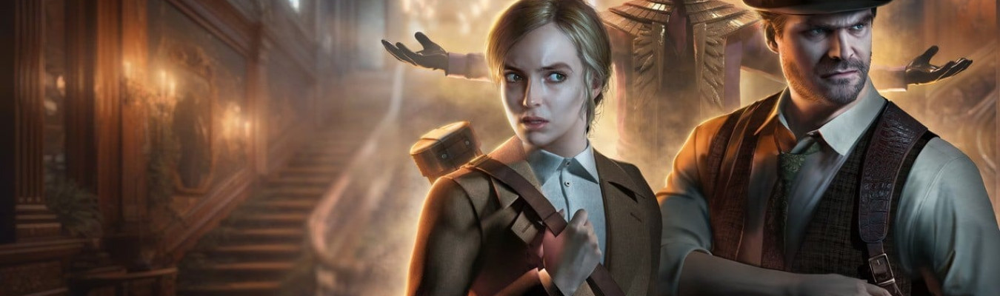
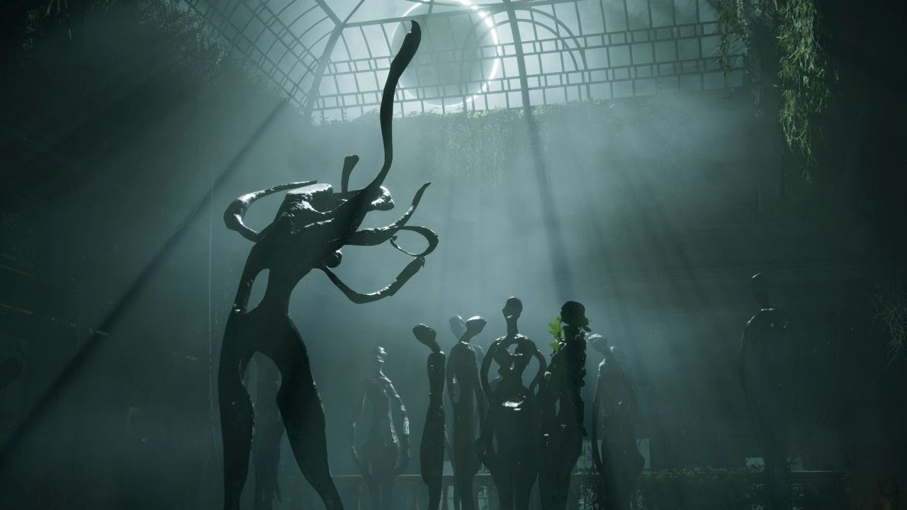
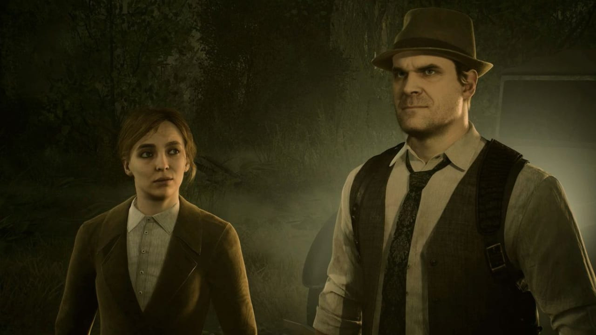
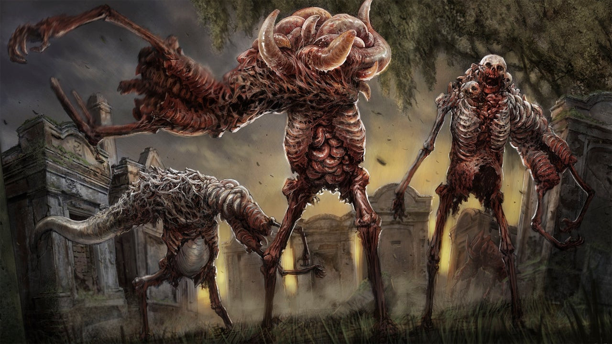

Análise | Alone in the Dark
Será que essa reimaginação da franquia valeu a espera?
Após muitos anos na geladeira, a clássica franquia Alone in the Dark está de volta com um novo título, o qual promete dar um novo início para essa série que é considerada como o pai do terror nos jogos.
Será que a espera valeu a pena?

A história do jogo não segue exatamente igual a do jogo original, sendo mais uma reimaginação. O estúdio misturou elementos de diversos jogos da franquia e também trouxe ideias novas para a narrativa.
A presença de Mikael Hedberg como escritor também pode ser notada. Conhecido por ter escrito o roteiro do jogo de terror Soma, Mikael trouxe uma dose bem maior de psicologia humana ao jogo. A história mistura terror sobrenatural com traumas da mente, e conta com algumas reviravoltas bem interessantes.
O jogo ainda conta com dois protagonistas, Edward e Emily, interpretados pelos atores David Harbour e Jodie Comer, os quais fazem um excelente trabalho para dar vida a esses personagens. Cada um tem sua própria campanha e para ter a história completa é preciso jogar as duas campanhas.
O enredo é muito bem escrito, trazendo informações em seu próprio tempo e toda hora dando pistas para o jogador do que realmente está acontecendo, seja através da narração ou itens espalhados pelo mapa.
Os personagens possuem arcos diferentes, cada um com sua própria história e background, os quais são interessantes. Edward e Emily possuem suas próprias interações com os outros personagens da campanha, agindo de forma diferente e apresentando perspectivas únicas deste mundo.
Faltou apenas uma maior variedade nas duas campanhas, já que é preciso repetir muitos dos puzzles e desafios que estão presentes em ambas as histórias, o que pode cansar um pouco para quem deseja jogar as duas.

O fato do jogo ser um título de menor orçamento é evidente, mas na parte visual ele consegue ao menos compensar com uma boa direção de arte. Há alguns cenários realmente bonitos, com visuais bastante únicos. A própria mansão merece destaque, sendo muito bem ambientada com um tom de época.
A exploração do jogo funciona muito similar a de Resident Evil. A mansão possui diversas portas e passagens trancadas, as quais podem ser liberadas conforme avança e encontra as chaves e novas ferramentas.
Cada cômodo no mapa fica originalmente marcado na cor vermelha no mapa, mudando para azul assim que todos os itens da área foram coletados. Isso ajuda a manter em mente quais locais já foram concluídos.
Em certas partes da campanha, os jogadores são transportados para outros mundos, onde o foco deixa de ser exploração e quebra-cabeças, e muda para o combate. Essas partes são mais lineares, o que ajuda a dar ar fresco ao jogo em certos momentos.
O melhor aspecto do jogo é sem dúvidas os seus puzzles. O jogo evita carregar os jogadores pela mão. Ele apenas inicialmente aponta em que direção os jogadores devem ir para solucionar os enigmas e não dá nenhuma dica de como chegar no objetivo.
o jogo para tentar achar alguma pista que possa ajudar a resolver os quebra-cabeças. Isso dá uma dinâmica interessante, fazendo o jogador realmente analisar tudo que reuniu em sua investigação.
Alguns puzzles são mais simples, enquanto outros mais complexos que exigem mais do jogador. Infelizmente alguns quebra-cabeças tiveram um deslize durante a localização, dificultando mais do que deveriam já que acabaram perdendo um pouco da essência do original em inglês..
A quantidade de balas é bastante limitada, o que significa que dependendo da dificuldade que jogar, sair atirando em todos os inimigos não é sempre o melhor caminho. Todos os cenários trazem uma boa variedade de armas corpo a corpo espalhadas para usar, além de garrafas e tijolos.
Enquanto os tijolos podem ser arremessados para chamar atenção do inimigo ou até mesmo direto contra eles para causar dano, a garrafa permite molhar o adversário com álcool, podendo então colocar fogo com o disparo do tiro, sendo essa a forma mais fácil de eliminar multidões.
Apesar da baixa variedade de armas, o combate com armas de fogo do jogo ainda pode ser considerado funcional, já que cumpre o seu papel. No entanto, não podemos dizer o mesmo a respeito do combate corpo a corpo.
As mecânicas de combate corpo a corpo são extremamente desajeitadas. Além das péssimas animações, os ataques não possuem peso e a esquiva nem sempre funciona como deveria, deixando o jogador perdido durante o combate.
O jogo ainda conta com a opção de furtividade, mas não é muito prática. Ela serve apenas para se esgueirar entre os inimigos, já que não é possível matá-los furtivamente, e na maioria dos cenários não há espaço para passar despercebido.

Outro ponto que poderia ser melhor é a variedade de inimigos. Você passa basicamente o jogo inteiro enfrentando o mesmo tipo de criatura, e a falta de chefes durante praticamente a campanha toda só torna isso mais evidente.
A modelagem dos personagens que compõem o elenco também deixa a desejar. Os NPCs que não são os dois protagonistas parecem que não tiveram o mesmo cuidado, muitas vezes apresentando visuais e animações muito mais robóticos.
Conclusão
Alone in the Dark traz um forte enredo, escrito por um dos melhores escritores do gênero atualmente. É intrigante, bem escrito e cheio de mistério, com seus personagens trazendo histórias interessantes que deixarão os jogadores curiosos. Os puzzles também merecem destaque, sempre exigindo do jogador analisar suas pistas para tentar achar uma solução.
Infelizmente o jogo peca em muitos aspectos, como uma parte técnica que deixa a desejar, um combate extremamente fraco e uma variedade muito pequena de inimigos. A grande repetição entre as duas campanhas também pode desanimar muitos a completarem ambas.